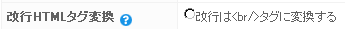
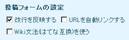
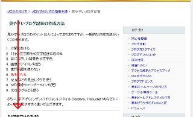

見やすいブログ記事の作成方法
見やすいブログのポイントは人によってまちまちですが、一般的な作成方法がいくつかあります。
- 行間をあける
- １行の文字数を40文字程度に収める
- 目にやさしい背景色や文字色
- 画像やアイコンも使う
- 専門用語を使わない
- 色をかえる
- h2,h3などの見出しタグを使う
- hrの横線やアンダーラインも使う
- リストタグなども使う
さらに、字下げ（インデント）やフォントスタイル（Verdana、Trebuchet MSなど）によっても、見やすさに違いが出てきます。
【行間を空ける方法】
行間を空ける場合、ブログサービスによっても方法が違いますが、たいていは入力画面で「エンターキー」を２回押すだけで１行の空きが出来ます。
１回で改行、２回で１行の空き、２回で２行…といった感じです。
けれども、投稿して実際に表示してみても改行が反映されていない場合は、設定を変更する必要があります。
ブログサービスによってまちまちですが、記事入力画面の下側にある「改行をbrに変換」で設定するケースが多いです。
シーサーブログの場合

livedoorの場合

エンターだけで記入する場合は「変換する」にチェックを入れて設定します。
一方、htmlタグを直接使って記入する場合は、「変換しない」に設定して<br />のタグを直接打ち込みます。
htmlタグを使って行間を空ける場合は、<br />タグを２回記入する方法が一般的ですが、ほかにも段落分けの<p></p>タグを使う方法もあります。
・改行を<br />に変換する設定が有効の状態
→ 入力画面でエンターボタンを２回押すだけ。
・改行を<br />に変換しない設定の場合
→ ①改行タグの<br />を連続して直接入力
もしくは、
→ ②段落分けの<p></p>タグでくくる
どの方法で記入しても、同じように１行の行間が空きます。
ちなみに、この行間の間隔の調節はスタイルシートの line-height の値で設定できますが、このブログの場合は line-height:150%; で設定しています。
CSSで初心者簡単ブログカスタマイズ方法
【１行の文字数を40字程度に】
ブログ上での目の動きは、「左上から下」へ、もしくは「中央上から下」へぼんやりと眺めながら下がっていくのが一般的です。

この時、１行の文字数があまりに多いと、左右へと目を走らせなくてはならないために疲れてしまいます。
逆に、大きなフォントの場合で１行の文字数が少なくても、縦方向へと長くなってしまい、下へ下へと頻繁に目を動かしたり、画面をスクロールする必要が出てくるので面倒くさいです。
レイアウトの幅を広げたり、文字の大きさを変えたりしながら、ぼんやり見ている範囲内に収まるよう適当な文字数になるまで調節しましょう。
行数についても、１ページの長さは３～５スクロール程度に調節することをおすすめします。
トップページなどで長くなってしまう場合は、１ページあたりの表示記事数を少なくしたり、「続きを読む」を利用したりして、複数のページに分割するとよいでしょう。
【目にやさしい背景色や文字色】
長時間サイトに滞在する場合、背景色が暗い方が疲れにくいです。
パステルカラーや原色などの使用は避け、白～灰色などの淡い色彩の背景色を使うようにするとよいでしょう。
また、リンクの青の色も、明るめの #0000ff よりも、多少トーンを落とした色彩（例：#0000aa、#2200C1など）の方がまぶしくないです。
けれども、クリック率が下がる場合もあるので、暗すぎに注意しましょう。
テキスト主体のウェブサイトで色彩を使う場合は、同じ赤でも多少トーンを落とした赤にするとか、原色をそのまま使うのを避けるのがポイントになります。
そのほか、画像を使ったり、見出しタグやリストタグを使ったりすると見やすいかと思いますが、チカチカする画像やポップアップ広告などの動きのある要素は避けた方がよいでしょう。
戻る - ブログの作り方の簡単手順
- 無料ブログにアイコン追加で記事作成
無料ブログで記事を作成するときに画像を挿入しているブログもときどき見かけます。記事タイトルの直下に挿入しているブログや簡単でシンプルなアイコンを挿入しているところもあったりとさまざまです。 アイコン... - ブログ作成にお役立ちhtmlタグ
ブログ作成の際に使っておくと何かとお役立ちなhtmlタグにはいろいろありますが、以前はストロングタグと太字のフォントタグのＳＥＯ的な違いについてあれこれと記事にしてみました。 強調タグのストロング効... - 無料ブログの記事の書き方動画など
無料ブログで記事を書く際の書き方として私の場合は段落わけのタグを用いながら作成するといいと思います。段落わけのタグとしてはピータグなどを使用しながら書くといいみたいです。 改行する場合は&l...